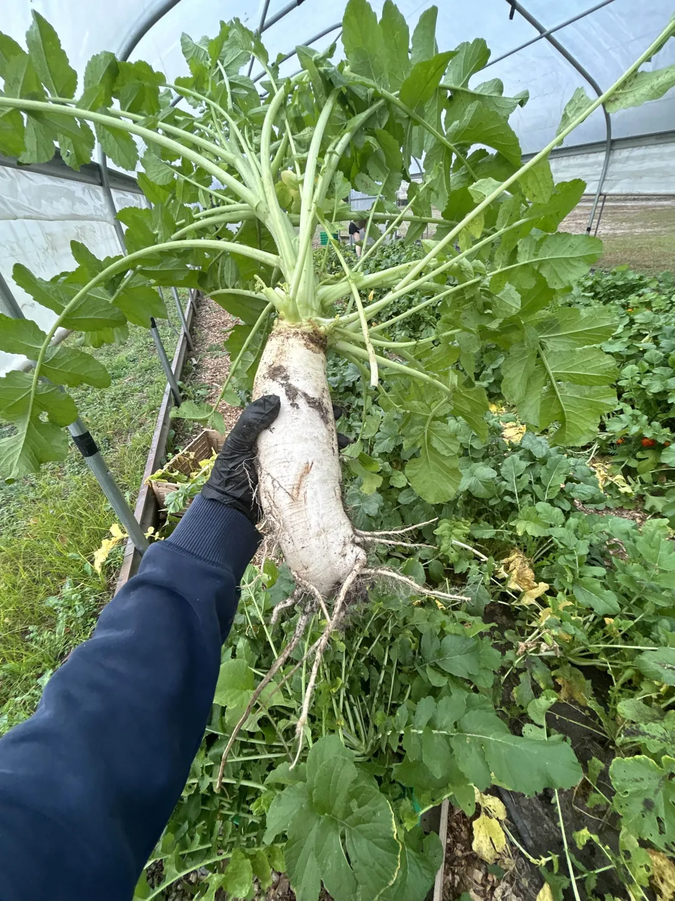

Coursework
The courses I've found most interesting so far throughout my undergraduate degree.
Neural Interface Engineering
Electrochemistry at the interface, electrode design for stimulation and recording, and existing applications (pacemakers, retinal implants, DBS, etc.).
Main takeaway: Material scientists are unbelievably underappreciated.
Physical AI with Brain-Inspired Electronics
Principles of neuromorphic computing, leveraging physical systems to perform computation, and unique considerations for on-chip processing.
Main takeaway: Complexity of physical systems is worth understanding (sometimes).
Neurobiology
Ionic basis of the action potential, synaptic plasticity, motor pathways, and the neural basis of several disorders.
Main takeaway: Plasticity is an extremely powerful concept.
Mathematical Statistics II
Estimators and how to evaluate their quality, plus an in-depth revisit of confidence intervals and hypothesis testing.
Main takeaway: How to think about the quality of guesses.
Operating Systems
Deep dive into the low-level basis of memory, CPU scheduling, file systems, threading, and more.
Main takeaway: A new appreciation for how complicated and brilliant computing is.
Non Parametric Statistics
Distribution-free statistical tests of center and spread of data leveraging permutation, rank, and sign.
Main takeaway: Most of what I've learned in statistics falls short when very specific assumptions can't be made.
Interfaith Food Shuttle Farm


My time with the Interfaith Food Shuttle Farm taught me so much about the difficulties of growing fresh produce at scale.
It gave me a new appreciation for the work that goes into growing food without pesticides, herbicides, or a large team of people.
Spending hours fanning through cabbage leaves looking for worms, mulching the shallow roots of blueberry trees, and spreading wheel barrows
of leaf mulch on fields (and in my shoes) has changed the way I see a fully stocked grocery store forever.
I'd highly encourage anyone local to spend a day with them.